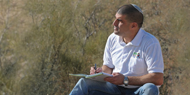

קישור חיצוני: יובל אשוש, בוגר המרכז, בשיחה על מנהיגות, חינוך וחזון

יובל אשוש, בוגר המרכז, בשיחה על מנהיגות, חינוך וחזון
2017-05-29
חזרה לחדשות מרכז מנדל למנהיגות בנגב
2017-05-29
קישור חיצוני: יובל אשוש, בוגר המרכז, בשיחה על מנהיגות, חינוך וחזון